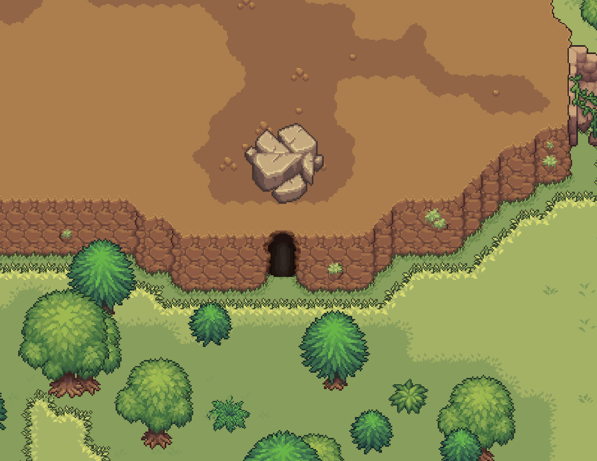
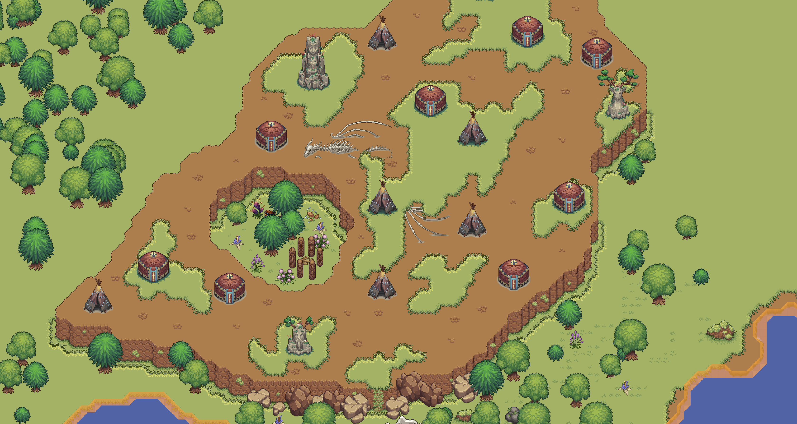
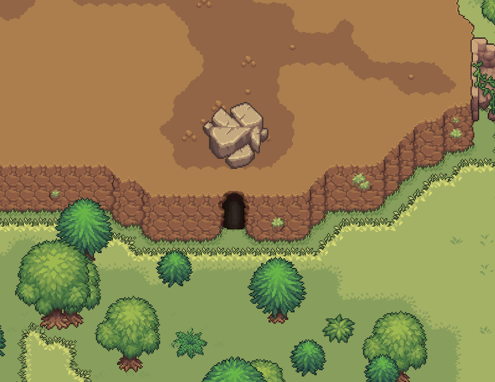
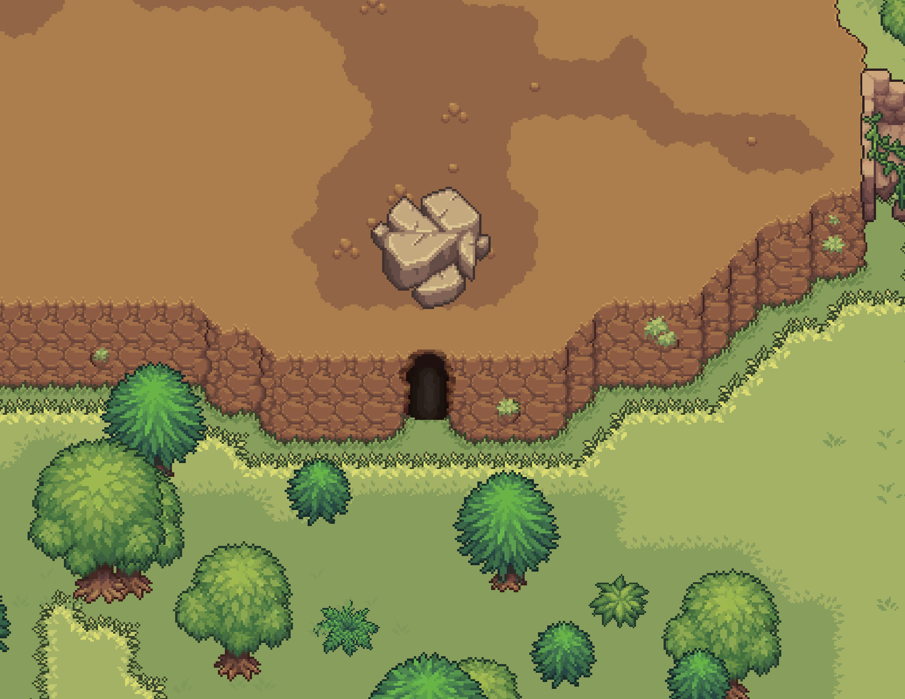
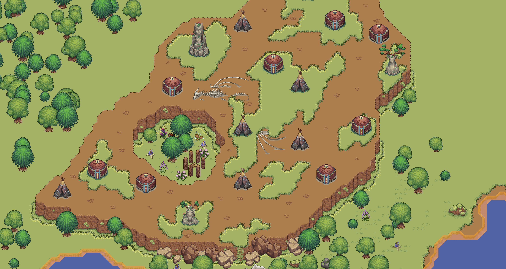
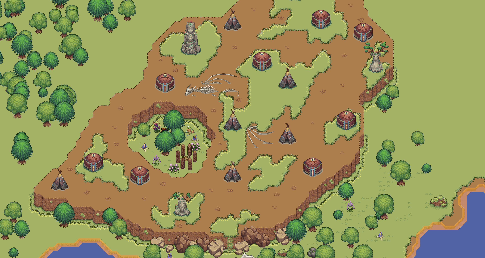

Grind Hero é um universo em constante expansão! Esta seção é dedicada a apresentar os teasersPequenas prévias ou informações sobre conteúdo que ainda será lançado. e informações sobre o que está por vir, novos mapas, economia e muito mais.
Novos Mapas e Biomas - Expansão do Mundo
O mundo de Grind Hero continuará a crescer, trazendo novos desafios, criaturas e tesouros.
Novos Mapas - 40% Concluído
Próximas Regiões (Teasers):
Ilha Rukora: O jogador iniciará sua jornada na ilha Rukora, especificamente na Vila Elfhein, esta vila era reino dos grandes elfos enquanto eles ainda viviam entre os humanos antes de partirem para sua última grande jornada. Hoje a vila serve como abrigo e base para os novos recrutas que estão em treinamento.
Alerta de Spoiler
Rat Cave: Esta caverna gigante será a primeira caverna que o jogador terá contato quando entrar no jogo. Ela possuirá mais de um andar e até mesmo baús com itens para o jogador explorar e coletar.
Vila dos Orcs: Uma vila fortificada habitada por orcs, com missões e desafios únicos, não sabemos muito sobre ela ainda e se há realmente Orcs.


Um Misterio
Torre ou Castelo ? Esta estrutura imponente será um dos principais pontos de interesse no jogo. Sua verdadeira função e os segredos que abriga ainda são desconhecidos.
Sistema de Economia Avançado
Uma economia robusta e controlada pelos jogadores está sendo desenvolvida, com foco em:
Economia - 60% Concluído
Casa de Leilões Global: Para compra e venda de itens entre jogadores.
Outros Conteúdos Planejados
Mapas completos para o lançamento: Em desenvolvimento, sem data definida mas previsto para ser entregue em julho no lançamento oficial.
Eventos Mundiais Dinâmicos: Invasões, chefes mundiais e mais.
Novas Classes e Especializações: Expansão contínua das opções de jogo.
Crafting de Itens e equipamentos: Em breve, não se sabe muito sobre isso.
Fique ligado nos canais oficiais para mais novidades e datas de lançamento!


 

 
